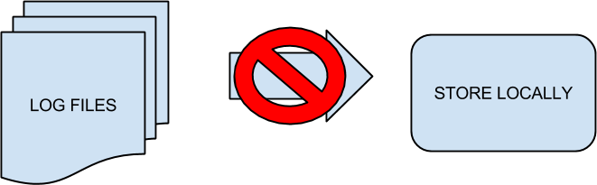

Intro to Building Data Pipelines in Python with Luigi

Data Pipeline
Luigi
Okay, maybe not this Luigi.
But this Luigi


So, what is Luigi?
"Luigi is a Python package that helps you build complex pipelines of batch jobs. It handles dependency resolution, workflow management, visualization, handling failures, command line integration, and much more."
So, why use Luigi?
Okay seriously, back to our pipeline
fetch_logs.py
aggregate_logs.py
Example: frequency of URLs
load_data.py
The cron guessing game
0 11 * * * /home/user/bin/fetch_logs.py
0 12 * * * /home/user/bin/aggregate_logs.py
0 13 * * * /home/user/bin/load_data.py
But what happens when something fails?
Consider a download failure
The process continues
aggregate logs... fail
load data... fail
So how can we solve this?
Add more time between cron jobs. Not really a solution...
Write a wrapper around all jobs
generic_pipeline_wrapper.py
import os
from fetch_logs import data_download
from aggregate_logs import calculate_frequency
from load_data import data_loader
def main():
data_file = data_download()
if os.path.isfile(data_file):
frequency_file = calculate_frequency()
if os.path.isfile(frequency_file):
data_loader()
Please don't do this.
The cron guessing game revisited
0 11 * * * /home/user/bin/generic_pipeline_wrapper.py
So, now the Luigi way
Fetch Logs Task
import luigi
class FetchLogsTask(luigi.Task):
def output(self):
def run(self):
Our new aggregator task
class AggregatorTask(luigi.Task):
def output(self):
def run(self):
def requires(self):
Our new load data task...
...will be defined in a bit. ^_^
Let's take a look at the Task methods first
def output(self):
return luigi.LocalTarget('my_output.tmp')
a task is considered complete by looking for output()
tasks that do not have output(), can override complete()
Targets
def output(self):
return luigi.LocalTarget('my_output.tmp')
LocalTarget is a local file
A Hive Target Example
def output(self):
# Luigi Hive code expects the partition
# data to be in dictionary format
partition_dict = {"year": partition_year,
"month": partition_month,
"day": partition_day}
return luigi.hive.HivePartitionTarget(
your_table,
partition_dict,
database=your_database)
Requires
def requires(self):
return [DependantTask0(), DependantTask1()]
this is how we define our dependency chain
Run
def run(self):
with open('input.csv', 'r') as input:
cat_count = 0
for line in input.readlines():
animal, age, color = line.split(',')
if animal == 'cat':
cat_count += 1
with self.output().open('w') as out_file:
out_file.write(cat_count)
Run Luigi for HDFS
# Snakebite is lovely
from luigi.hdfs import SnakebiteHdfsClient
# Snippet from __init__
self.hdfs_client = SnakebiteHdfsClient()
...
def run(self):
# Copy all files in source directory to HDFS target
for f in self._files_in_dir(self.source_dir):
self.hdfs_client.put(f, self.hdfs_dir)
# We'll write some _dummy_ output to
# indicate the task has finished
with self.output().open('w') as outfile:
outfile.write("Finished: {}\n".format(time.time()))
Now, back to our original example
Copy logs
class CopyFile(luigi.Task):
def output(self):
return luigi.LocalTarget('done_copy.log')
def run(self):
# Some sort of implementation to copy
with self.output().open('w') as output:
output.write("hello\tworld")
Aggregate logs
class AggregatorTask(luigi.Task):
def output(self):
return luigi.LocalTarget('aggregator.data')
def run(self):
with open('input.csv', 'r') as input:
cat_count = 0
for line in input.readlines():
animal, age, color = line.split(',')
if animal == 'cat':
cat_count += 1
with self.output().open('w') as out_file:
out_file.write(cat_count)
def requires(self):
return [CopyFile()]
Load data example
class DbExampleTask(luigi.postgres.CopyToTable):
host = "localhost"
database = "animals"
user = "luigi"
password = "abc123"
table = "cat_counter"
columns = [("date_from", "DATE"),
("date_to", "DATE"),
("cat", "TEXT"),
("cat_count", "INT")]
def requires(self):
return [AggregatorTask()]
Real-world application
What Luigi is not
cron
"Note that the central scheduler does not execute anything for you or help you with job parallelization. For running tasks periodically, the easiest thing to do is to trigger a Python script from cron or from a continuously running process."
Quick sidenote on the Luigi Central Scheduler

What Luigi is not continued...
mrjob
scalding there's support for it in luigi!
Things not covered
MySQL
Pig
Redshift
Spark
BigQuery
And more...
Luigi Docs
http://luigi.readthedocs.org/en/stable/index.html
Snakebite Docs
http://snakebite.readthedocs.org/en/latest/
Projects Similar to Luigi
Airflow
https://github.com/airbnb/airflow
http://nerds.airbnb.com/airflow/
Pinball
https://github.com/pinterest/pinball
https://engineering.pinterest.com/blog/pinball-building-workflow-management
Engineer @ TeachersPayTeachers
we're hiring! http://www.teacherspayteachers.com/Careers Slides: http://bit.ly/1fhkwYg
Thanks! Cheers!